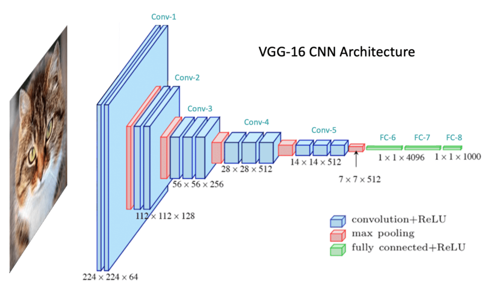
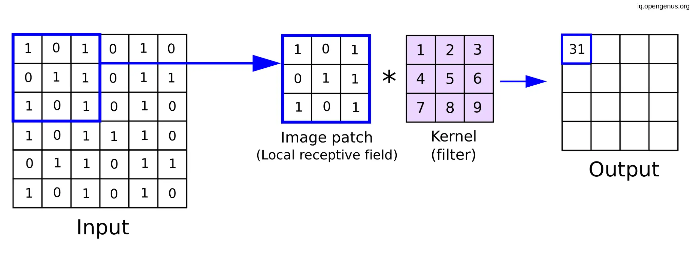

What is a CNN?
Convolutional Neural Networks (CNNs) are specialized neural networks designed for processing data with grid-like structures such as images. CNNs excel at image recognition, classification, and processing tasks.
Key Components of CNN
Convolutional Layers
The convolutional layer is the core building block of a CNN. It applies a mathematical operation called convolution, using filters or kernels to extract features from input images. Each kernel scans the input image, producing feature maps that capture the presence of specific patterns such as edges, textures, and shapes.
The convolution operation involves sliding a small kernel or filter across the input image, computing element-wise multiplications, and summing them to form an output. The stride parameter determines the step size of the kernel movement, influencing the size of the resulting feature map. Padding may also be applied to ensure consistent output dimensions.
Through successive convolutional layers, CNNs learn hierarchical features—from simple edges and textures to complex structures and objects. This hierarchical feature extraction significantly enhances the model's ability to accurately interpret and classify images.
Pooling Layers

Pooling layers play a crucial role in CNNs by progressively reducing the spatial dimensions of the feature maps, making the network more computationally efficient. This operation not only decreases the amount of parameters and computation required but also helps control overfitting.
There are two main types of pooling methods commonly used:
- Max Pooling: Selects the maximum value within each region of the feature map. It effectively captures the most prominent features and preserves critical information such as edges and textures.
- Average Pooling: Computes the average value within each pooling region, providing a smooth and generalized representation of the features.
Pooling typically involves moving a small window across the feature map and extracting the maximum or average values. Similar to convolution, pooling operations also have parameters like window size, stride, and padding, which control the output size.
By strategically using pooling layers, CNNs can capture essential features more effectively while significantly enhancing the network's overall efficiency and robustness.
Fully Connected Layers

Fully connected layers, often found at the end of a CNN architecture, are responsible for making final predictions or classifications. These layers take the high-level features extracted by previous convolutional and pooling layers and map them to the desired output classes.
Each neuron in a fully connected (dense) layer is connected to every neuron in the previous layer. This dense connectivity enables the network to learn complex combinations of features and patterns from the input data.
While convolutional and pooling layers excel at extracting and compressing spatial features, the fully connected layers act as decision makers, interpreting these features to output class scores or regression values. In image classification tasks, the output of the final fully connected layer typically feeds into a softmax function to produce class probabilities.
It's important to manage the number and size of fully connected layers to avoid overfitting, especially when working with limited training data. Techniques such as dropout are often applied to these layers to improve generalization.